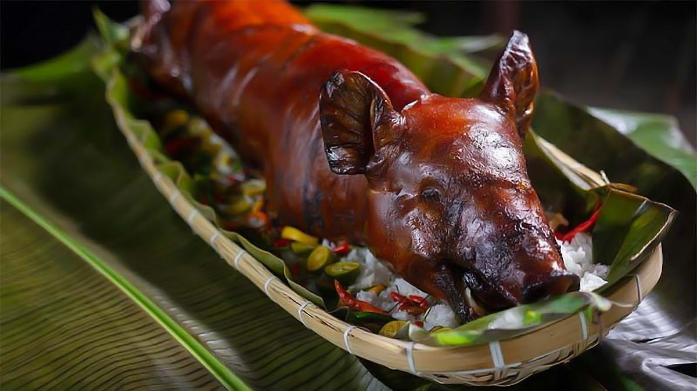
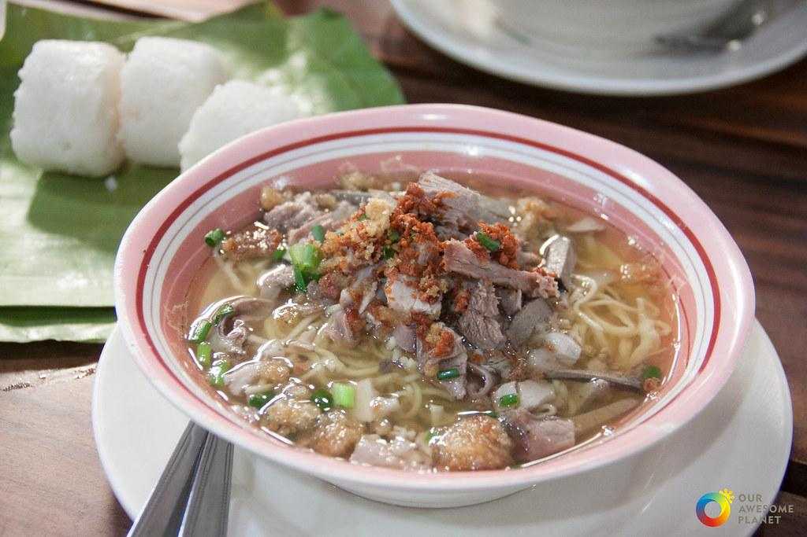
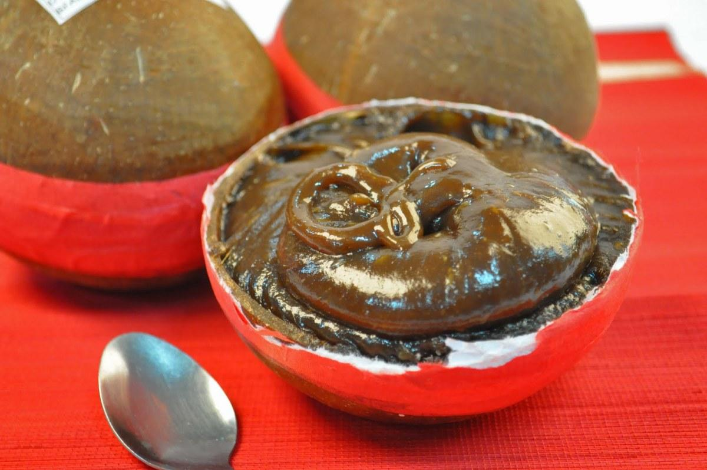

Famous For



The Visayas is famous for its delicious local dishes, unique products, traditional crafts, and cultural heritage.
What Visayas is famous for:
- Cebu Lechon - Famous roasted pig known for its flavorful meat and crispy skin.
- Iloilo La Paz Batchoy - A noodle soup made with pork, liver, broth, and toppings.
- Bohol Calamay - A sweet and sticky delicacy made from glutinous rice, coconut milk, and sugar.
- Bacolod Chicken Inasal - Grilled chicken marinated in local spices and seasonings.
- Negros Piaya - A flat pastry filled with muscovado sugar.
- Capiz Shell Crafts - Decorative products and handicrafts made using capiz shells.